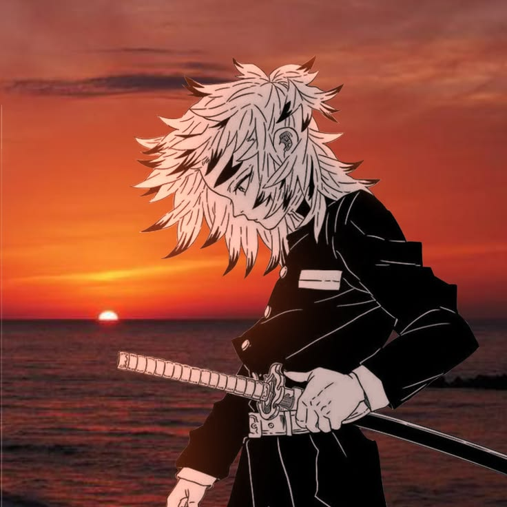
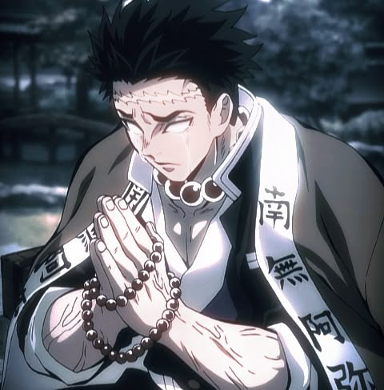
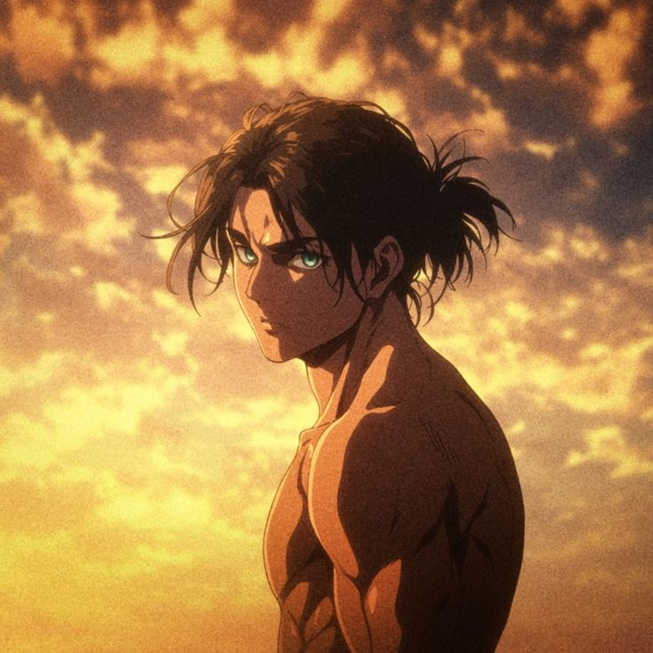

Bu dünya bu kadar süredir bir efsane ağırlıyor:
Dileğini tut ve Rengoku'nun ateşiyle mumu üfle!
Karakterlerin üstüne tıklayarak güçlerini uyandır!

"Yüreğindeki alevi asla söndürme! Yaşın kaç olursa olsun göğsünü gere gere yaşa, doğum günün kutlu olsun Civan!"

"Namu Amida Butsu... Taş Sütunu kadar sarsılmaz, güçlü, huzurlu ve hayırlı bir yeni yaş dilerim evlat."

"İleriye bakmaktan asla vazgeçme! Hedeflerine ulaşana kadar savaşmaya devam et. Doğum günün kutlu olsun Civan!"
Mesajları okumak için hediye kutularının üzerine tıkla!
Açmak için tıkla
"Seninle tanıştığım için o kadar mutluyum ki kısa zamanda ailemden biri gibi oldun ve senin yerin benim için diğer insanlardan tamamen farklı olucak ve biliyorum zamanında çok kırdım seni beni affetmeni istiyorum ve bundan sonra hep yanında olcağıma söz veriyorum İyiki Doğdun Nice Seneleree CİWANIMMMMM!!!"
Açmak için tıkla
"Nereden başlayacağımı bilemiyorum ama şunu bilmeni istiyorum ki hayatıma girdiğin için kendimi çok şanslı hissediyorum. Seni tanıyalı çok uzun zaman olmamasına rağmen benim için çok farklı ve özel bir yer edindin. Umarım bundan sonra hep güzel anılar biriktiririz. Ne olursa olsun aramızın bozulmasını istemiyorum çünkü sen benim için sıradan bir arkadaş değilsin. İyi ki tanımışım seni, iyi ki hayatımdasın. Hep mutlu ol, yüzün hep gülsün. Nice yaşlara , seni çok seviyorum BICIIMMM🫰🏻"
Açmak için tıkla
"CİVA SLM İLKOKUL ARKADAŞIM YÜZÜMÜ KAPATSANDA O FOTOĞRAFTA OLSUN YİNEDE İYİKİ VARSIN İYİKİ DOĞDUN İYİKİ BİZİM BİNGÖLLÜ ANİMECİMİSSİN💪"
Açmak için tıkla
"Buraya 4. arkadaşın mesajı gelecektir."
İpucu: civan veya rengoku
İpucu: alperen ve civan
✨ ÖZEL GİZLİ MEKTUP ✨
"Çok kötü bir dönem geçiriyordum seninle ve Ecrin'le tanışana kadar. İkiniz benim için aşırı özel insanlarsınız. Her zaman kaçmayı ve korkak gibi yaşamayı denedim ama artık buna bir son veriyoruz ve sen ve ben korktuğumuz şeylerin üstesinden geleceğiz ve sonsuza kadar birlikte olacağız! Fiziksel olarak yan yana olamasak bile ruhlarımız birbirine kenetlendiyse her zaman yananyız demek bu.